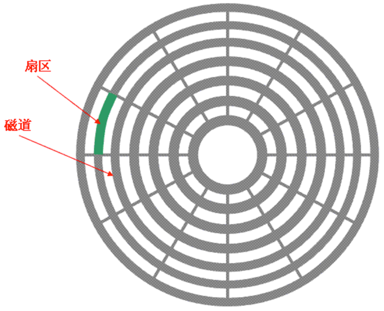
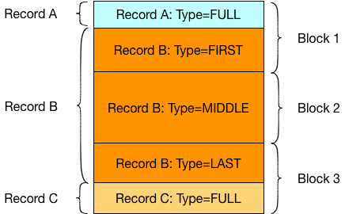
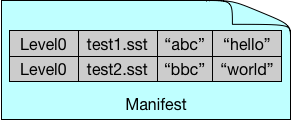
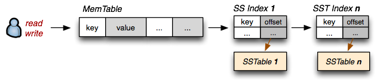

LevelDB是Google开源的持久化KV单机数据库，由Google传奇工程师Jeff Dean和Sanjay Ghemawat开发并开源，大神出品必属精品。如果我们将代码看做艺术品的话， LevelDB就属于一件精美的艺术品，值得我们仔细地去欣赏，用心地去感受。当你向一个高级程序员请教如何学习C++，他一定会推荐你去阅读LevelDB的源码，本文以及后续的文章主要用来记录源码学习中的心得体会和一些思考，帮助自己以及阅读文章的你成长为一名出色的工程师。
1. 简介
相信很多人接触的第一个Key-Value存储数据库是Redis，它是一个纯内存的数据库，存取数据非常的快，但是内存高昂的价格也是Redis不能完全作为数据库来使用的制约。通常都是使用Redis来作为一个缓存，将经常访问的热数据存储在内存之中，长期不被访问的冷数据则被淘汰掉。LevelDB作为一个Key-Value存储引擎，不同于数据库需要提供一个丰富完整的系统、查询语言、事务等特性，存储引擎只需要负责数据的读写即可。内存中放不下的数据，LevelDB就将其写入磁盘中，同时LevelDB保证了数据在磁盘中也可以被快速的读写。
为什么说磁盘中的数据读写性能很差呢？很大一部分原因是由于磁盘中的读写操作是随机的，磁盘在处理读取和写入请求时，首先根据请求的开始地址算出要处理的数据在磁盘上的位置，之后要进行以下几步工作：
- 寻道：磁头移动到数据所在的柱面
- 旋转：盘片高速旋转，使磁头到达数据的起始位置
- 传输：磁头沿磁道从磁盘读取或写入数据

如果是顺序写的话，只需要进行一次寻道和旋转即可；而随机写则需要进行多次的寻道和旋转，从而导致性能下降。传统的关系型数据库MySQL在将数据写入到磁盘中，并不仅仅只写入数据，还会写入对应的索引。也就是说MySQL是随机写入的，随机性能开销很大。而这也恰恰是LevelDB需要解决的问题，做到顺序的数据落盘。因此LevelDB具有很高的随机写，顺序读/写性能，但是随机读的性能很一般，也就是说，==LevelDB很适合应用在查询较少，而写很多的场景==。
2. 整体架构
LevelDB是典型的LSM树(Log Structured-Merge Tree)实现，LSM树的核心思想就是放弃部分读的性能，换取最大的写入能力。为了实现这一特性，就需要尽量尽量减少随机写的次数，原因正如前文所说。对于每次写入操作，并不是直接写入磁盘，而是分成两步执行：1）写入日志；2）写入内存中的MemTable。

LevelDB的整体架构如上图所示，整体由如下几个组成部分：
2.1. Log文件
Log文件主要作用是系统发生故障时，能够保证不会丢失数据。LevelDB每次写操作都会首先通过 WAL（Write Ahead Log）的方式记录日志，然后再将数据写入MemTable。因为MemTable是存储在内存中的，如果发生意外导致机器宕机，内存中的数据是无法恢复的，LevelDB可以根据Log文件恢复内存中的MemTable，不会造成系统丢失数据。
WAL日志是很多传统数据库例如MySQL采用的技术，详细解释可以参考数据库如何用 WAL 保证事务一致性？ - 知乎专栏。 为什么增加了一步Log操作，性能反而会变高呢？因为Log的写入一直是在文件的末尾追加，而持久化数据库的数据是一个随机写入操作，顺序写会节省大量的磁盘悬臂来回寻址的过程，效率要高好几个量级。
每个Log文件由多个block组成，每个block大小为32K，读取和写入以block为基本单位。下图所示的Log文件包含3个Block：

2.2. MemTable
MemTable是在内存中存储数据的数据结构，其中保存的数据是按照Key的值进行排列的，可以是红黑树或者其他的平衡树，在LevelDB中使用的是跳表(SkipList)。跳表是红黑树的一种替代数据结构，具有更高的写入速度，而且实现起来更加简单。
当MemTable中的数据量超过设置的限定值 write_buffer_size(默认为 4MB) 时，就会创建一个新的MemTable来接收数据，原来的MemTable则被标记为Immutable MemTable，其内存结构和MemTable是完全一样的，区别仅仅在于它是只读的。Immutable MemTable中的数据会随后被写入磁盘中的 Level 0 中的SSTable进行持久化。
2.3. SSTable
SSTable是数据在硬盘中存储的文件结构，文件尾部追加了一块索引，记录key \(\to\) offset，我们读取文件的时候是倒序读取的，所以优先会读取到这些索引信息。我们就可以根据读取到的索引信息快速锁定SSTable当中的数据而不用读取整个文件了，提高随机读的效率。
LevelDB在磁盘中的存储分为多个Level（写到这里突然明白了LevelDB是如何命名的，2333），SSTable是整个LevelDB存储数据的核心，其分布在多个Level中，Level 0的SSTable文件由Immutable MemTable直接Dump产生，其他Level的SSTable文件由其上一层的文件和本层文件归并产生，并且每一层设定了一个大小限制：
- Level 0：最多4个SSTabel
- Level 1：总大小不超过10MB
- Level 2：总大小不超过100MB
- Level n：总大小不超过\(10^n\)MB
在这个限制条件下，Level 6 的存储限制已经达到了 1T，Level 7 则达到了 10T。
2.4. Manifest
SSTable的本质是一个key-value的序列表，并且其中的key是有序的。既然SSTable当中的key是有序的，那么显然就有最大值和最小值。我们把最大值和最小值记录下来就可以在查询的时候快速判断，我们要查询的key它可能在哪些SSTable当中，从而节省时间，加快效率。
Manifest文件记录各个SSTable各个文件的管理信息，比如该SST文件处于哪个Level，文件名称叫啥，最小key和最大key各自是多少，如下图所示：

2.5. Current
Current是一个指针，指向最后提交的Manifest文件。因为在实际运行当中Manifest文件不止一个，伴随着我们的压缩等操作，都会产生新的Manifest。我们需要一个指针记录下来当前最新的Manifest文件是哪一个，方便查找。并且Manifest当中的数据量并不小，所以我们不能全部都存放在内存当中，放在文件里用一个指针引用是最佳选择。
3. 写操作

LevelDB每次写操作都会首先通过 WAL（Write Ahead Log）的方式记录日志，然后将数据写入MemTable 。因为MemTable的底层实现是跳表，可以保证\(O(logn)\)的时间复杂度进行数据的插入。当MemTable写入足够多的数据之后，就会将MemTable转化成Immutable MemTable，之后会新建一个空的MemTable应对后续的请求，当dump指令下达之后，会将Immutable MemTable写入成SSTable文件进行存储。
如前文提到的，Level 0中只能保存4个SSTable，当数量超出之后，LevelDB会执行Compaction压缩策略，这也是LevelDB设计的精彩之处，Google在Bigtable的论文中提出了三种压缩策略：
- Minor Compaction：这种策略十分简单，就是简单地把MemTable中的数据导入到SSTable。
- Major Compaction：这种策略会合并不同Level之间的SSTable文件。
- Full Compaction：这一种策略会将所有的SSTable文件合并。
其中，Major Compaction是LevelDB分层机制的核心，除了Level 0之外的所有Level都是通过该策略生成的。当某个Level下的SSTable文件数目超过一定设置值后，LevelDB会从这个Level的SSTable中选择一个文件 (Level > 0)，将其和下一层级Level + 1中的SSTable文件进行合并，并放在Level + 1中。
这里需要注意的是Level 0的SSTable文件和其它Level的文件相比有特殊性，Level 0内的SSTable文件，可能存在key重叠，因为我们只是遍历Immutable MemTable的数据，顺序将其写入SSTable。LevelDB更新一条记录时，并不会进行查找替换，而是作为一条新数据写入MemTable，随后写入SSTable中，所以在Level 0中会存在key重叠的现象。对于其它Level的SSTable文件来说，因为他们是通过Compaction压缩策略生成的，该策略就是对已有的记录进行整理压缩，删除掉一些不再有效的KV数据，减小数据规模，减少文件数量等。
如果在Level 0中，则需要将所有key值有重叠的文件都纳入到待合并的集合当中来。在挑选待合并集合的时候，LevelDB会记录本次触发压缩的最大key值，下一次会选择大于这个key值的文件开始执行压缩。相当于一种轮流机制，保证Level当中的每一个文件都有被合并的机会。
接下来就是从Level + 1当中选择文件了，选择的标准也很简单，将所有和待合并集合中key值有重叠的文件全部挑选出来进行合并。合并的过程本质上是一个多路归并的过程。
在归并的过程中LevelDB还会对已有的记录进行整理压缩，删除掉一些不再有效的KV数据。由于所有文件当中的key值都是有序的，从它们的头部开始，对于每一个key都会进行判断，是应该保留还是丢弃。判断的逻辑也很简单，对于某一个key而言，如果这个key在更低级的Level中出现过，那么说明有更新的value存在，我们需要进行抛弃。
当Compaction完成之后，所有参与归并的文件都已经没有用处了，可以进行删除。不论哪一种Compaction的发生，都会改变整个Level的结构，所以需要在每一次Compaction之后，生成一个新的Manifest文件，将此次Compaction带来的文件变动记录进去。最后，将Current指向新生成的Manifest。
4. 读操作
LevelDB的读取首先在内存中依次查找MemTable、Immutable MemTable，由于都是基于跳表实现的，所以查找效率很高。
如果没有找到，那么就会读取磁盘中的数据进行查找。LevelDB首先读取Manifest文件，根据Manifest文件中记录key的范围，可以猜测需要查找的key可能出现在哪些SSTable中，只需要查找这些即可，减少查找时间。
前面说到过LevelDB中同一个key可能存在多个KV对，怎么确定哪个是最新的呢？LevelDB在写入SSTable的时候遵循越晚写入的数据越新的原则，也就是说Level序号越小的数据越新。